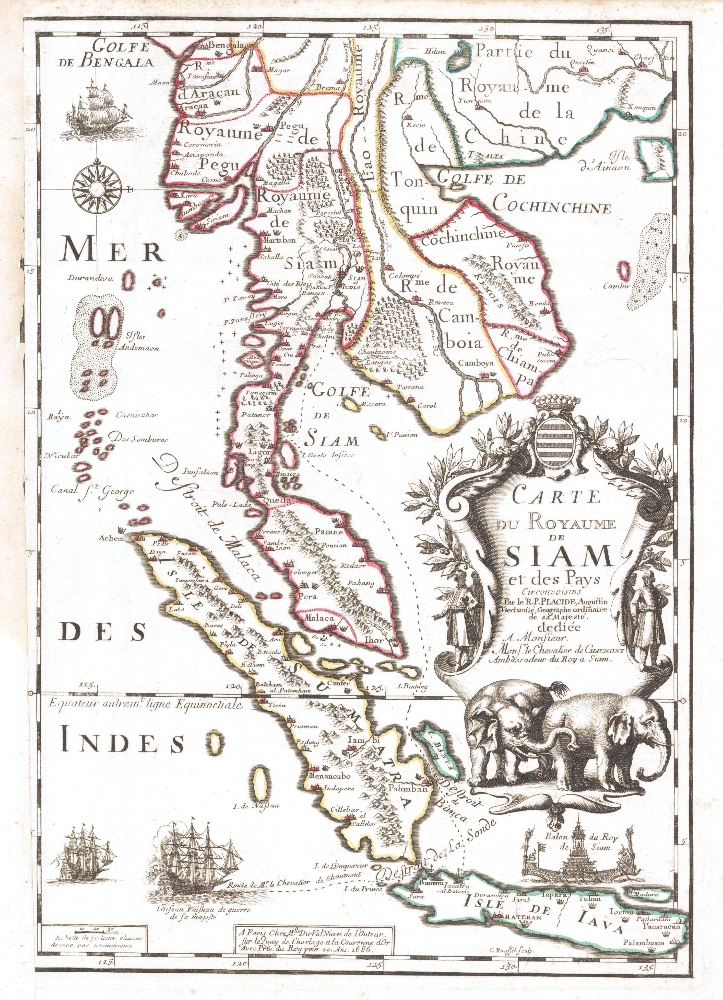
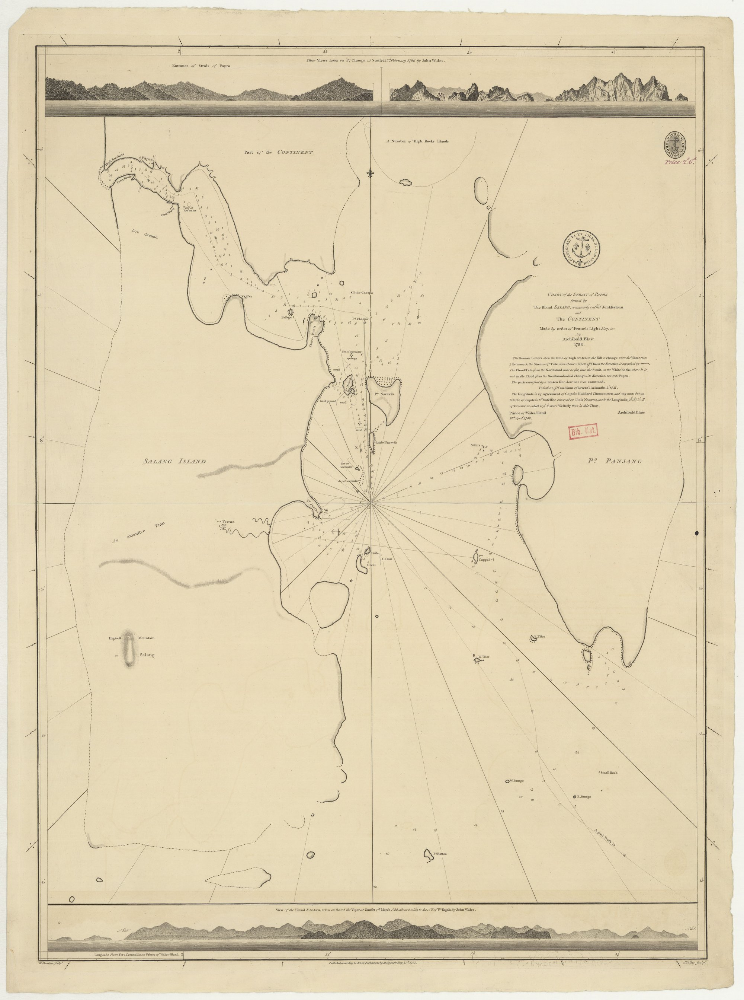

The Pirates of Phuket
For most of its history, Phuket was a dangerous place to live — caught between a far-away Thai kingdom to the north and a busy Malay world to the south. These are five stories from the sea-edge of that frontier.
Why this matters
Look at the island on a map. To the north and east is the Thai kingdom — but the capital, first at Ayutthaya and later at Bangkok, was hundreds of kilometres away. For the Thai king, Phuket was the far edge of his territory. He took tin from the island when he could. He often could not protect it.
To the south, Phuket was something else: it was almost a neighbour to the Malay world. Sultans, traders, sea-gypsies, and warrior tribes lived only a few days' sail away. Many people on the island spoke Malay. Many of the boats in its harbours flew Malay flags.
Between these two worlds — between a far-away kingdom to the north and a busy, complicated Malay coast to the south — came pirates. Lots of pirates. Portuguese, Acehnese, Bugis, Illanun, and the local sea-gypsies known as Salateers. They came for tin. They came for pearls. They came for slaves. And sometimes, they came for the island itself.
These are five stories about pirates and Phuket. They cover almost two thousand years. As you read them, look for two ideas:
- Phuket was always on the edge of the Thai kingdom. Help from the capital was far away.
- Phuket was always close to the Malay world. The pirates, the trade, the danger — and sometimes the rulers — came from the south.

Why Phuket mattered — and why pirates mattered more
Around the year AD 424, a Chinese Buddhist monk named Fa Hsien was trying to get home. He had spent fifteen years travelling in India to collect Buddhist holy books. Now he was sailing across the Bay of Bengal, terrified of two things: storms, and pirates.
The fastest way to China was through the Strait of Malacca — the long, narrow sea between Sumatra and the Malay Peninsula. But Fa Hsien did not go that way. In his travel diary — one of the oldest descriptions of Southeast Asia that has survived — he warned future travellers:
Three hundred years later, an Arab geographer called Al Masudi described the people who haunted those mangrove channels. He called them the Orang Laut — Malay for "sea people." They lived their whole lives in small boats. They knew every hidden inlet. They fired poisoned darts at any ship that strayed too close.
So traders started to avoid the Straits altogether.
Instead of sailing past the pirates, they did something clever. They stopped at the narrow part of the Malay Peninsula — called the Isthmus of Kra — and hauled their goods overland to the other side. Phuket, sitting on the Andaman coast, became one of the perfect stopping points.
This is the first surprising thing to understand: piracy made Phuket important. If the Straits had been safe, Phuket would have been a quiet fishing island. Because the Straits were not safe, Phuket became a busy port where merchants from India, China, Persia, and the Malay world all met.
Pirates as police?
The early Malay empire of Srivijaya (in southern Sumatra) had a clever way of dealing with the pirate problem. Instead of fighting the Orang Laut, they hired them.
The pirates became Srivijaya's coast guard. Their new job was to attack any ship that did not pay Srivijaya's taxes. One modern historian describes this as "enrolling the poachers as gamekeepers" — turning the people who used to steal your fish into the people who protect your fish.
Sometimes the pirates were enemies. Sometimes they were employees. Sometimes they were the rulers themselves. This blurry line between criminal and government would last in these waters for the next thousand years.
The Portuguese pirates and the Ottoman hunter
By the 1500s, a new kind of pirate had arrived in the Andaman Sea. They had come halfway around the world — from Portugal.
The Portuguese had built a trading empire across Asia. They had captured the great Malay city of Malacca in 1511 and were busy buying spices and selling cloth. Most Portuguese captains were ordinary merchants. But some realised that the wealthiest ships in these waters belonged to Muslim traders, and that no power in the Andaman Sea was strong enough to stop a well-armed Portuguese ship from taking what it wanted.
So four Portuguese captains set up a pirate base — probably on the Surin Islands, just north of Phuket. From there they hunted Muslim shipping. They also raided the local people, kidnapping them and selling them as slaves far away.
When the king of Siam — ruling from his capital at Ayutthaya — heard about this, he was furious. The pirates were attacking ships that paid taxes to him. They were stealing his subjects. And they were doing it on the very edge of his kingdom, where his power was weakest.
The king's response was unusual. He did not send a Thai general. He hired a foreigner to hunt them: an Ottoman Turk named Heredim Mohamed.
The Ottoman Empire stretched from Turkey across North Africa and into the Indian Ocean. Its captains had been fighting the Portuguese for decades — in the Mediterranean, in the Red Sea, in the waters off India. Heredim Mohamed knew exactly how Portuguese pirates thought.
In 1544, Heredim Mohamed sailed from Ayutthaya with fifteen ships. He hunted the four Portuguese captains down. We do not know exactly what happened in the final battle. We do know that the pirate colony was wiped out.
What this story tells us
This is a small event, four hundred years before televisions or the United Nations. But look at how many parts of the world it touches in one story: a Portuguese pirate, an Ottoman mercenary, a Siamese king, local people on Phuket, and the Muslim trade routes that connected Arabia to China.
Phuket was already a place where global powers met. And the pattern you will see again and again was already there: Phuket was so far from the Thai capital that the kingdom had to send special help — sometimes from the other side of the world — to defend it.
Stolen from Phuket — the Salateers
The most constant danger to Phuket in the 1600s did not come from far away. It came from just down the coast.
The English traders called these people the Salateers. They were the descendants of the same Orang Laut you met in Story 1: families who spent most of their lives in small wooden boats, fishing along the Andaman shore from southern Burma down through Phuket and into the Malay Peninsula.
Some Salateers fished. Some traded. And some — at certain times of year, when the wind was right — went raiding.
In the 1670s, an English merchant named Thomas Bowrey sailed up and down this coast. He kept a careful journal. Of the Salateers he wrote:

A few decades later, the Scottish sea captain Alexander Hamilton described what the Salateers actually did:
The pirates kidnapped people on Phuket, tied them up in their boats, and sailed south to sell them at the great Malay sultanate of Aceh in northern Sumatra. There they were sold as slaves.
This was not a rare event. It happened over and over for at least a hundred years. A few examples that survive in old records:
- 1643. Dutch records report that pirates from Johor (a Malay sultanate, in what is now southern Malaysia) sailed up to Phuket and carried off 24 islanders.
- 1679. A group of Phuket's pearl fishermen were captured. This time the Thai king — King Narai, ruling from faraway Ayutthaya — finally responded. He ordered a military force from the southern Thai city of Ligor (modern Nakhon Si Thammarat) to chase the raiders south.
- 1691. Phuket's people braced themselves for an attack by a Malay pirate chief named Panglima Kulup.
Why was this happening?
If you look at a map, the answer is clear.
Aceh, Johor, and the rest of the Malay sultanates were closer to Phuket than Bangkok or Ayutthaya were. Their warships could reach the island in a few days. Thai armies, sent from far inland, took weeks or even months to arrive — and they had to march through jungle that the raiders did not have to cross.
So the Salateers had time. They could attack, kidnap, and sail away long before any Thai help arrived.
This is the second big idea in our story: Phuket's geography pulled it south, towards the Malay world, even when its politics pulled it north, towards the Thai kingdom.
The pirates of Phuket were not strangers from another planet. Many of them lived just down the coast. They spoke languages the people on Phuket could understand. They knew exactly when the tin boats came in, when the pearl fishers went out, when the lookouts changed shifts. They were, in a strange way, neighbours.
When the Bugis ruled Phuket
In the 1700s, a new group of seafaring warriors began sailing into the Andaman Sea. They came from far across the Java Sea, from the island of Sulawesi in modern Indonesia.
They were the Bugis.
One modern historian calls the Bugis "the Vikings of Southeast Asia," and it is a useful comparison. Like the Vikings of medieval Europe, the Bugis:
- built fast, sleek sailing ships
- travelled enormous distances by sea
- fought in armour: chain mail, and steel helmets shaped much like the helmets of European knights
- could be traders, raiders, settlers, or rulers — depending on the day
By the late 1700s, Bugis fighters had spread across the Malay world. They had taken over the sultanate of Selangor on the Malay Peninsula, and Bugis princes ruled it as their own kingdom.
In 1771, the ruler of Selangor — a Bugis prince named Daeng Merwah Theyan — sailed north with his fleet.
He landed on Phuket. He occupied it.
Why Phuket? It was a convenient base. From the island, his ships could threaten the nearby Malay sultanate of Kedah to the south. Phuket had freshwater, tin to trade, and harbours hidden from the wind. And — most importantly — the Thai king's army was far away and busy with other problems.
For a short period, then, a Bugis pirate-prince from Sulawesi was the effective ruler of Phuket.
What this story tells us
This is one of the strangest moments in Phuket's history — and one of the most revealing.
Phuket was officially part of the Thai kingdom. The king considered it his. But in years when the king was weak, Phuket could be taken over by anyone strong enough to reach it first. That "anyone," in 1771, was a Malay-Bugis warrior from a thousand kilometres south.
The last pirates — from pirate island to steam power
Phuket's most dangerous century began in 1809.
You may already know the story of the Burmese sack of Thalang: how a Burmese army landed on Phuket, how Lady Chan and Lady Mook helped lead the defence, and how those two women became national heroes. (That earlier siege, in 1785, is told in The Heroines.) What may surprise you is what happened a quarter-century later — when the Burmese came back.
In 1809 the Burmese armies returned. This time they succeeded where they had failed in 1785. They sacked Thalang and burned the old town to the ground. After the Burmese were finally driven off in 1811, the island was nearly empty. Many people were dead. Many more had fled into the jungle or sailed down to the new British port at Penang. Houses had been burnt. Rice fields had been abandoned. The harbours sat quiet.
To pirates, an empty island with deep, hidden harbours was a gift.
For nearly a decade after the Burmese sack, Phuket itself became a pirate base. The same kinds of raiders who had attacked the island for centuries now used it as a hideout — repairing their boats in its bays, storing their loot in its coves, sailing out to attack ships across the Andaman Sea.
The victim had become the lair.
The Illanun
By this time, a fearsome new group of pirates was raiding all the way from the Philippines to the Andaman. They were the Illanun, from the Sulu Sea.
Unlike the Bugis or the Salateers, who also fished and traded, the Illanun did almost nothing but pirate. Their fleets went on cruises lasting up to five years, raiding one coast after another, taking thousands of people as slaves.
In 1789, an Illanun chief named Syak Ali captured the Thai port of Songkla and shut down trade across the peninsula for years. In 1791, the sultan of Kedah secretly offered the Illanun 20,000 Spanish dollars to massacre the new British settlement at Penang.
For the British, it was clear: something had to be done.
The ship that changed everything
For almost two thousand years, sailing ships had needed the wind. The pirates knew this. A favourite Illanun trick was to row their long, narrow boats — called prahus — straight into the wind, where a European sailing ship could not chase them.
That changed in 1833.
In that year, a small British warship called HMS Diana appeared in these waters. She had a coal-burning steam engine. She did not need the wind.
The first time the Illanun met her, they thought she was a sailing ship on fire — they could see the black smoke pouring from her funnel. They turned to attack what looked like easy prey.
Then the Diana came straight at them. Against the wind.
The Illanun fleet was destroyed.
The Lizzie Webber and the pirate in the scarlet coat
The most famous pirate battle of this era happened on a small British merchant ship called the Lizzie Webber in 1863.
The pirate chief was a man called Si Rahman. He wore a bright scarlet coat into battle. He believed he was protected by a magic charm — that no bullet could kill him.
He was wrong.
The Lizzie Webber's captain, a man named Northwood, lowered the angle of his small twelve-pounder cannon until it pointed almost straight down at the pirate's boat. He fired. Si Rahman, magic charm and all, did not survive the day.
A four-year-old boy named "Johnny" watched the battle from a hiding place on the ship. Decades later, when he was an old man, he wrote down what he had seen. His account is one of the most vivid eyewitness records of Andaman piracy that has survived.
The end of an era
In 1873, the king of Siam in Bangkok sent an order to the governor of Phuket: cooperate with British anti-pirate patrols around the island of Langkawi to the south.
For the first time in Phuket's history, the Thai kingdom and a European power across the sea were working together to police the same coast.
Piracy did not disappear overnight. But after the 1870s, it was never again the dominant fact of life on the Andaman Sea. The age of the great pirate fleets was over.
Looking back
Stand on a beach in Phuket today and look out at the sea. The water looks calm. The ferries pass quietly. The fishing boats go out and come back.
For two thousand years, this view was very different.
The pirates of Phuket teach us something about this island that is easy to forget when you live here today:
- Phuket was always on the edge of the Thai kingdom. Help from the capital was slow, expensive, and sometimes impossible. Several of the people who ruled Phuket across its history were not Thai at all.
- Phuket was always close to the Malay world. The pirates, the traders, the languages, the religions, and many of the everyday connections all pulled south, not north.
Today, Thailand's borders are clear. The Thai navy patrols these waters. Pirates are something you read about, not something your family hides from. But the geography that shaped Phuket's pirate centuries has not changed. The island is still where it always was — between two worlds.
Understanding the pirates is one way to understand the island.
Questions for discussion
- Story 1 argues that piracy is the reason Phuket became an important place. Do you agree? What other reasons might also explain it?
- The Siamese king hired an Ottoman Turk in 1544, the Bugis took Phuket in 1771, and the British finally helped stop the pirates in the 1870s. What does this pattern tell us about Phuket's history?
- In Stories 3 and 4, the danger came from the Malay world. In Story 5, the help also came from outside (the British). Was Phuket ever really controlled from Bangkok? What evidence would you need to prove your answer?
- Choose one primary source quote from these stories. What does it tell us about the past? What does it leave out?
Main source: Colin Mackay, A History of Phuket and the Surrounding Region (2013), especially Chapters 9, 11, 12, 17, 20, and 23. The spellings of names from Malay, Bugis, and Burmese sources vary widely in older European records — Heredim Mohamed, Daeng Merwah Theyan, and Si Rahman all appear in slightly different forms in different documents. The dates and the shape of the story are well attested even where the spellings drift.